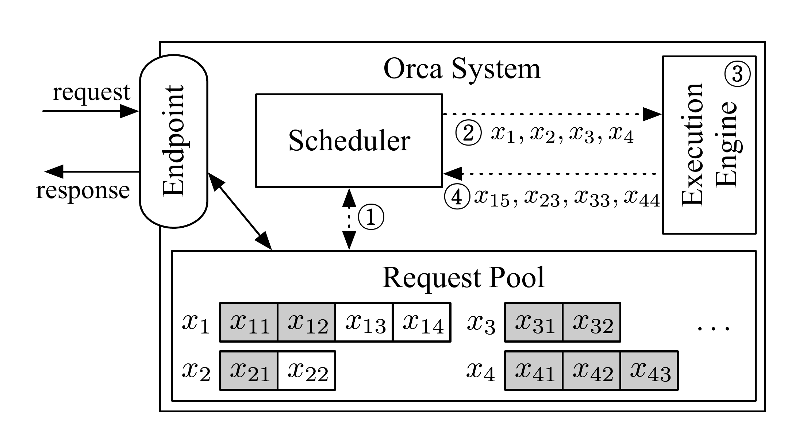
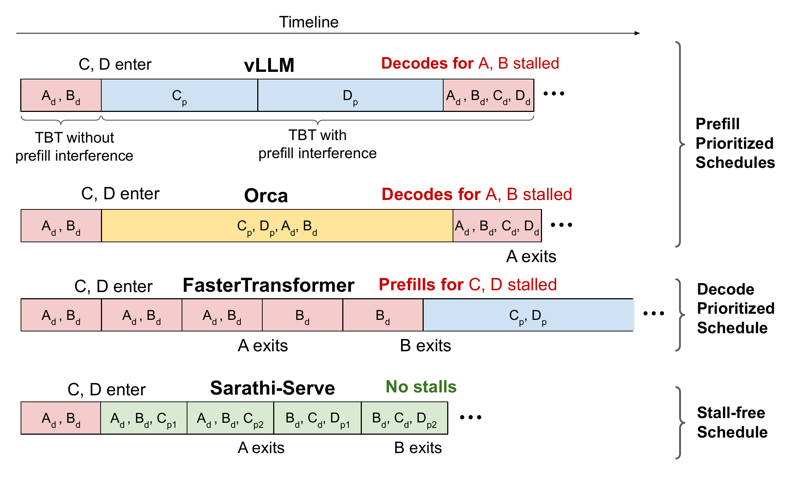
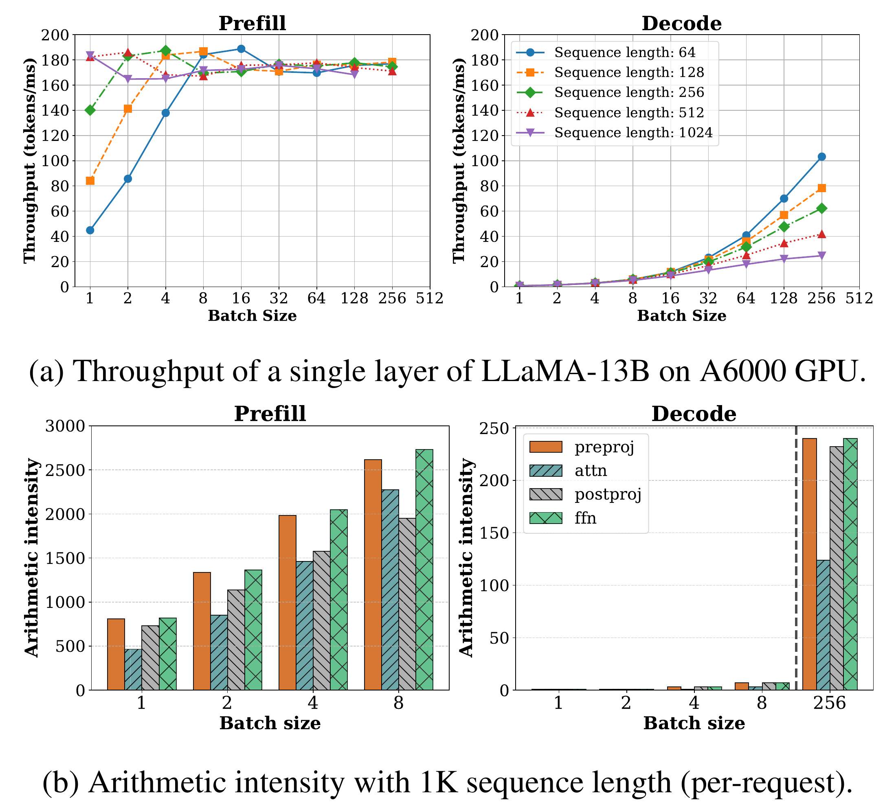
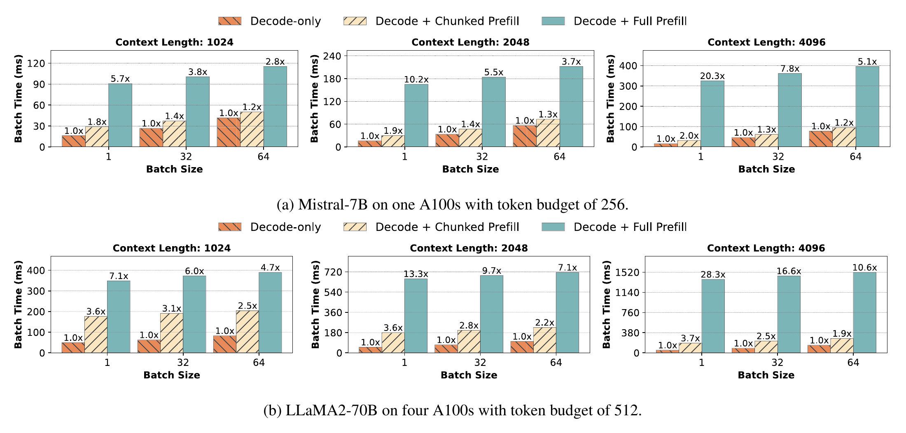

Scheduling and resource management in LLM inference systems. Drawing on Orca, PagedAttention, SARATHI, and Sarathi-Serve, this article discusses the trade-off between batching and latency in online serving for autoregressive models.
Building an online LLM inference service requires balancing two things at the same time: processing new request inputs and continuously generating outputs for existing requests. The former should get enough compute resources as quickly as possible, while the latter needs frequent, steady opportunities to run. When the two types of work share a GPU, prioritizing the long input of a new request may make existing requests wait longer for their next token. Continuously prioritizing existing requests, in turn, extends the wait for new requests.[1]
This tension can be broken down into scheduling problems at two levels: when a request enters a batch, and how much work it is allowed to process in each iteration. To assess how these decisions affect the user experience, we first need to understand the respective costs of input processing and step-by-step generation, and distinguish the latency of waiting for the first token from that of waiting for subsequent tokens.
The following sections first introduce the basic concepts and performance metrics of LLM inference, then discuss the scheduling mechanisms of continuous batching and chunked Prefill. Later, we use an example in which A is generating, and a long-input request B and a short request C arrive in succession, to show how different scheduling methods affect request waiting times.
1. Inference Basics: The Costs and Performance Metrics of Two Phases
1.1 Prefill and Decode: Compute and Memory-Access Costs
For a typical autoregressive Transformer, Prefill processes the input positions in the prompt and builds the Key and Value states needed by Attention at each layer; it also usually produces the first output token after this forward pass. Decode then uses the token just generated and the saved KV states to continue predicting subsequent tokens. Because of the autoregressive nature of the model, generation within a single request has sequential dependencies, while the current steps of different requests can be executed together.[1]
The KV cache avoids recomputing the Key and Value states for the entire history every time a token is generated by saving states that have already been computed. Subsequent Attention operations must still read these states, however; as the context grows, the KV cache also occupies an increasing amount of GPU memory.[2]
Take the GQA-based Qwen2.5-32B-Instruct as an example. It has 64 layers, 8 KV heads per layer, and a head dimension of 128 (a hidden dimension of 5120 / 40 query heads). Assuming that the KV cache is stored in BF16 or FP16, caching one token requires:
M_KV/token = 2 (Key and Value) × L × H_KV × d × b
= 2 × 64 × 8 × 128 × 2 = 262,144 bytes
= 256 KiB
Therefore, when a request caches 8,192 tokens, its KV occupies about 2 GiB; when it caches 32,768 tokens, it occupies about 8 GiB. If 32 requests are served at the same time, each retaining 8,192 tokens and with no cache shared between requests, the KV data alone requires about 64 GiB. This calculation counts the input and generated tokens already written to the cache. As Decode progresses, the states continue to accumulate, and subsequent Attention operations need to read a longer history.
Under the conditions above, consider an NVIDIA A100 80GB SXM and estimate the theoretical time required by the two phases from the hardware peaks. Let the batch size be 1. For ease of estimation, for a model on the 32B scale, approximate the number of parameters involved in linear computation as P = 32 × 10^9, and use the same approximation for the amount of weights read.
Theoretical Prefill time estimate:
For linear operations such as projection layers and the FFN, the amount of computation is approximately 2PS. Dividing this computation by peak compute gives:[3]
T_prefill,linear ≈ 2PS / F_peak
= (2 × 32 × 10^9 × 8,192) / (312 × 10^12)
≈ 1.68 s
Causal Attention has S(S+1)/2 valid position pairs. If the masked upper triangle is ideally skipped, the two matrix multiplications together require 2LH_QdS(S+1) FLOP. Here, 40 query heads should be used; 8 KV heads are used only when calculating KV storage.
T_prefill,attention ≈ 2LH_QdS(S+1) / F_peak
= (2 × 64 × 40 × 128 × 8,192 × 8,193)
/ (312 × 10^12)
≈ 0.14 s
T_prefill,compute ≈ T_prefill,linear + T_prefill,attention
≈ 1.68 + 0.14
≈ 1.82 s
Theoretical Decode time estimate:
When the existing context is about 8,192 tokens, a single step processes only one new position, but this position still needs to attend to the historical KV. The linear operations require approximately 2P FLOP, while QKᵀ and AV require approximately 4LH_QdS FLOP:
T_decode,compute ≈ (2P + 4LH_QdS) / F_peak
= (2 × 32 × 10^9 + 4 × 64 × 40 × 128 × 8,192)
/ (312 × 10^12)
≈ 0.24 ms
However, single-request Decode needs to read about 64 GB of weights from GPU memory, as well as the approximately 2 GiB of historical KV calculated above. Assuming that the weights and KV are each read from HBM once per step and that peak bandwidth is achieved, the read time is:
T_decode,memory ≈ (Pb + S × M_KV/token) / BW
= (32 × 10^9 × 2 + 8,192 × 262,144)
/ (2,039 × 10^9)
≈ 0.03244 s
≈ 32.4 ms
Under these ideal conditions, generating 100 output tokens takes about 5.03 seconds in total: approximately 1.82 seconds for Prefill and 3.21 seconds for the subsequent 99 Decode steps (with Decode compute time ignored). The first output token is produced by Prefill. Prefill processes 8,192 input positions at once and can more readily form large-scale matrix computations. Ordinary Decode processes only one new position per request at each step, yet it must still read the model weights and historical KV. In this example, the main cost of a single Decode step comes from memory access. This illustrates the typical workload pattern in which long-input Prefill is compute intensive and single-request Decode is memory intensive.
It follows that when the two phases share a GPU, the difference between these workload patterns becomes a scheduling problem: processing a new request's entire long Prefill may delay the next Decode step of existing requests. Continuously prioritizing Decode, in turn, may extend the wait for new requests. The following discussion centers on the tradeoffs of continuous batching and chunked Prefill. Before comparing these mechanisms, we first need to discuss some common metrics for quantifying inference performance.
1.2 Inference Performance Metrics: Latency and Throughput
Measuring the efficiency of online LLM inference requires attention to both request latency and service throughput: the former describes waiting during response and generation, while the latter describes the amount of work the system completes per unit of time.[4][5]

| Metric | What it measures and what to observe | Main influencing factors |
|---|---|---|
| TTFT (Time to First Token) | The time from sending a request to receiving the first output token, reflecting how quickly the response begins. | Input length determines the amount of Prefill work, while model size, GPU compute, and operator efficiency affect execution time. Concurrency and request arrival rate change queueing time. A prefix-cache hit can reduce repeated input computation.[6] Client-side TTFT also includes tokenization, network transmission, and first-token return overhead. |
| TPOT (Time per Output Token) | The average generation time for a single request after the first token, commonly calculated as (E2EL − TTFT) / (number of output tokens − 1) and applicable only when the number of outputs is greater than 1. |
Affected by the execution cost of each Decode step and cumulative scheduling waits. The amount of model weights and KV read, GPU memory bandwidth, batch size, and operator efficiency determine the cost of a single step. The context continues to grow during generation, which also changes the time taken by later steps. |
| ITL (Inter-Token Latency) | The time interval between two adjacent output tokens arriving at the client. For streaming output, both the interval distribution and p95 and p99 should be examined. | In addition to the cost of Decode itself, the insertion of a long Prefill, scheduling waits, and resource contention may lengthen some intervals.[1] Network jitter and response buffering also affect the pace observed by the client. |
| E2EL (End-to-End Latency) | The total time from sending a request to receiving the final output token, including the wait before the first token and subsequent generation. | Input length and queueing affect when the answer begins, while the number of output tokens and Decode speed determine the duration of subsequent generation. Network transmission is also included in the total time. |
| Output Token Throughput / TPS | The total number of output tokens from all requests within a measurement window divided by the window duration, reflecting the service's overall generation capacity. | Concurrency and batch organization affect GPU utilization, while the input/output length distribution changes the workload of the two phases and KV occupancy. Compute, GPU memory bandwidth, capacity, and scheduling efficiency jointly constrain throughput. Near saturation, increasing concurrency may primarily increase waiting, and higher system-wide TPS does not guarantee that a single request generates faster. |
| Request Throughput / RPS | The number of successfully completed requests within a measurement window divided by the window duration, reflecting how many requests the service can complete. | Affected by the input/output length of each request, the request arrival rate, and the available serving capacity. RPS is easier to increase when there are more short requests. |
In the A, B, and C example, A most directly experiences whether subsequent tokens arrive on time, while B and C first face TTFT. The system also aims to serve more requests with a fixed amount of GPU resources.
An SLO (service-level objective) further turns experience requirements into constraints, such as upper limits on the first-token and generation intervals, and the proportion of requests that must meet them. Scheduling optimization therefore needs to answer: under the agreed latency requirements, how much can serving capacity be increased?[1]
2. Continuous Batching: Reselecting Requests Every Iteration
2.1 Orca's Iteration-Level Scheduling Process
First, consider a simple form of request-level batching: after selecting a group of requests, the system waits until the whole group has finished before admitting the next group. Requests usually have different output lengths. Even if a shorter request has already finished, the freed capacity cannot be handed to a new request in time. If A is still generating, newly arrived B and C may keep waiting outside the batch.[1] To illustrate the differences in request length within the same batch, we add a short request D. Suppose that each batch can admit at most 2 requests; A and D have completed Prefill and respectively need 4 and 2 more Decode steps. B arrives before Round 2, and C arrives before Round 3.

What constrains B and C here is the rule that requests can be reselected only after the entire batch finishes. Orca moves this decision point forward to the end of each iteration: the engine executes one iteration and returns the result to the scheduler, which then reorganizes the batch for the next iteration.[7]
Orca's system design is shown below. Requests enter the request pool through the Endpoint. The Scheduler selects the batch for the current iteration from the pool, and the Execution Engine returns the generated results to the scheduler after executing one iteration.

The gray cells in the request pool represent input tokens, and the white cells represent existing outputs. ①–④ in the figure show request selection, batch submission, one iteration of execution, and result return in sequence. Expanding this interaction to include state processing after the results are returned, the process can be divided into three steps:
- Select the next batch of requests. The scheduler selects the requests to run in the current iteration from the request pool. These can include both unfinished existing requests and new requests awaiting their first execution, and the scheduler sends them to the engine.
- Execute one iteration of model computation. The engine runs Prefill or Decode according to each request's phase, reads and updates its KV, and returns the results generated in this iteration to the scheduler.
- Update states and select another batch. Requests that have met their termination conditions exit, and the engine is notified to reclaim their KV. Unfinished requests retain their progress and participate in the next selection together with newly arrived requests. A short request can therefore finish and return first without waiting for a long request in the same batch.[7]
Reforming the batch does not recompute the entire context. The execution engine stores KV by request and reuses it across iterations. What the scheduler and engine exchange includes the current iteration's tokens, request identifiers, and execution positions. Even if a request is batched with different requests in the next iteration, it continues generating from its own KV state.[7] A simplified process is shown below:

At the end of Round 2, D has finished, and the scheduler removes it. The batch in Round 3 can then become {A, B}: A advances by one Decode step, while B processes its complete input and produces its first output. B no longer has to wait for A to finish its entire answer.
Orca's specific policy still selects requests in order of arrival, with at most max_bs requests in each batch. When a request is first admitted, it also reserves enough KV slots for the request's maximum total number of tokens, so there will be space for additional KV during later generation. The reservation can be released only after the request finishes. Therefore, for B to enter in Round 3, it needs both the batch capacity left after D exits and enough KV space. Different requests process different numbers of tokens and have different Attention-state lengths. After the scheduler has selected the requests, the engine must still organize this group of computations efficiently.[7]
2.2 Mixed-Batch Execution and KV Cache Management
Orca uses selective batching to support such mixed batches: the narrowly defined Attention operation is executed separately for each request, while other operations that are suitable for combining are batched. This design allows mixed requests to advance in the same iteration.[7]
Another requirement is to manage the continually growing states of these requests efficiently. PagedAttention manages the KV cache in blocks, reducing waste caused by large contiguous allocations, over-reservation, and fragmentation, while supporting shared states. vLLM builds a serving system on top of this mechanism.
The two operate at different levels. The scheduler decides “who runs in this iteration,” while memory management decides “which valid states can fit in GPU memory.” Improving memory utilization can make more requests eligible for admission, but it does not automatically determine their order of execution. Even the most flexible admission policy, however, cannot bypass the capacity of GPU memory.
At this point, A, B, and C have met at iteration boundaries. But even if they enter the same batch, can their respective latency requirements be met?
3. Chunked Prefill: Limiting the Amount of Input Processed per Iteration
3.1 Interference from a Long Prefill on Decode
When A is decoding, if the scheduler prioritizes processing B's entire long input, A has to wait for this Prefill. Combining A's Decode and B's Prefill in the same batch makes the execution time of the current iteration grow with the computation introduced by B (see Section 1.1), and A receives its next token later.[1]
Conversely, if existing Decode work is always prioritized and new Prefill work does not run until it has finished, the first tokens of B and C are delayed. Meanwhile, as existing requests continue to exit, the Decode batch may become progressively smaller, reducing the efficiency gained from batching.[1]
Agrawal et al. use the figure below to compare these tradeoffs. vLLM and Orca both prioritize allowing a new Prefill to join execution: vLLM temporarily does not run existing Decode work, while Orca mixes Decode with a complete Prefill, but the longer iteration still delays output. FasterTransformer prioritizes completing existing Decode work, while new requests wait a long time for Prefill. Sarathi-Serve splits up the long Prefill and interleaves it with Decode, further limiting the amount of work executed in each iteration.[1]

3.2 Mixed Execution of Chunked Prefill and Decode
Chunked prefill spreads the computation for a long input across multiple iterations. With causal Attention, later input positions still use the states of earlier positions: after a chunk is completed, its KV is retained, and the next chunk continues computation on top of these states. It is the execution process that is split; the input still belongs to the same context. Only after the final chunk has been completed is there a complete computation result that can produce the prompt's first output.[1][2]
Why can this partitioning work together with Decode? A small Decode batch is often constrained by memory access and leaves compute units with spare capacity. Inserting an appropriate number of Prefill tokens can increase the amount of useful computation in the same iteration. Once Prefill reaches a certain size, it can already use compute resources effectively; it may not need to process the entire long input at once to remain efficient. Chunking therefore provides room for adjustment: it limits the duration of a single iteration while maintaining computational efficiency.[1]
SARATHI's single-layer experiment provides a concrete example. The maximum throughput of the Prefill phase is affected by input length. As long as an input chunk contains enough tokens, it may maintain high execution efficiency; making the input still longer does not necessarily improve the processing speed per token. Decode throughput rises as the batch grows, while under the same batch size, a longer historical context lowers throughput.[2]
Arithmetic intensity is the amount of floating-point computation performed for each byte of data read or written. The arithmetic intensity of small-batch Decode is substantially lower than that of Prefill, which helps explain the two phases' different needs for compute and bandwidth.[2][3]

SARATHI studied combinations in which Decode piggybacks on chunked Prefill and discussed how differences in per-iteration workloads affect pipeline efficiency. Sarathi-Serve further targets online serving, organizing batches with a token budget to control the tradeoff between throughput and generation latency.[1][2]
Two key concepts need to be distinguished here: a generation stall concerns why a request that has already begun generating fails to receive its next token for a long time. For example, A is decoding, but for some scheduling reason A's generation pauses, substantially lengthening A's output interval and making the user feel that the answer has stopped.[1] A pipeline bubble concerns why an execution stage in a pipeline temporarily has no work to do. For example, with two GPUs, pipeline parallelism places the first half of the model's layers on GPU 1 and the second half on GPU 2. The same batch must first pass through GPU 1, which then passes its intermediate results to GPU 2. If GPU 1 is processing a time-consuming batch while GPU 2 has finished the previous batch and has no other ready work, GPU 2 can only wait idly for the next set of intermediate results.[2]
Chunking therefore has two different effects: limiting the amount of Prefill work per iteration while continuously scheduling Decode can reduce generation stalls for requests. In pipeline parallelism, making the execution times of different batches more similar can reduce waiting between stages.[1][2]
3.3 Sarathi-Serve's Token-Budget Scheduling
In each iteration, Sarathi-Serve first schedules running Decode requests, then Prefill requests that have not yet finished, and only then admits new requests within the remaining budget. The budget here counts the number of tokens newly processed in the current iteration. With ordinary single-token Decode, each running request first occupies one budget token. The remaining capacity can be allocated to Prefill.[1]
Continue with A, B, and C. Suppose that the budget for each iteration is 8, A is already decoding, B has 12 input tokens, and C has 2; both arrive before the scheduling decision for Round 1, with B ahead of C. Also assume that there is enough GPU memory and that none of the three requests finishes within the following three rounds.
| Round | Schedule Decode first | Use the remaining budget for Prefill | State at the end of the round |
|---|---|---|---|
| Round 1 | A: 1 token | B: 7 tokens | B has 5 input tokens remaining; C waits |
| Round 2 | A: 1 token | B: 5 tokens; C: 2 tokens | B and C complete Prefill and each produces its first output |
| Round 3 | A, B, C: 1 token each | No pending Prefill | All three continue generating, using 3 budget tokens |
Round 1 is no longer occupied by B's entire input, and A has an opportunity to advance in every round. B completes Prefill over two rounds, while C joins using the remaining budget in Round 2. As this shows, chunking does not eliminate waiting: B needs multiple rounds to complete its input, and C may still queue. It exposes more boundaries at which a long task can be rescheduled, thereby controlling its uninterrupted occupation of resources needed by other requests.
4. Choosing the Chunk Size: The Tradeoff Between Efficiency and Latency
4.1 Comparing the Time of Full and Chunked Prefill
Sarathi-Serve's stall-free describes a scheduling property: running Decode requests no longer lose the opportunity to advance for a long time because a complete Prefill is executed separately. It does not guarantee that a mixed batch is as fast as a pure Decode batch.[1]

The figure compares the batch execution time under three strategies—pure Decode, adding chunked Prefill, and adding complete Prefill—across different context lengths and batch sizes. Complete Prefill increases the batch time to about 20.3 times that of pure Decode, while the corresponding value after chunking is about 2.0 times. This shows that “limiting the amount of inserted Prefill work can substantially reduce interference,” while also showing that the additional cost has not disappeared.[1]
4.2 How to Choose the Chunk Size and Token Budget
Making chunks smaller can usually limit the Prefill work added in a single iteration, making interference with Decode easier to control. But the same input must pass through more iterations, and the time to complete the first token becomes more susceptible to queueing across iterations. If computation is too fragmented, kernel launches, scheduling, and lower compute utilization may become significant, and later chunks still need to access earlier KV.[1][2]
Increasing the chunk size may improve the rate and execution efficiency of Prefill, but it also makes mixed batches heavier, so requests in Decode are more likely to experience longer intervals. The appropriate budget depends on the objective currently under constraint: strict requirements on generation intervals limit how much work can be inserted into each iteration, while a tight first-token target requires reserving enough serving capacity for waiting Prefill requests.[1]
The budget should therefore be chosen by comparing TTFT and generation-interval distributions under a fixed model, hardware configuration, and request trace, while also observing throughput. Input and output lengths and arrival intensity should also be varied to examine performance under long inputs, bursty traffic, and sustained Decode occupancy. A configuration that is suitable under low load may not maintain the same latency near overload.[5]
5. Summary of the Mechanisms: Request Scheduling, KV Management, and Chunked Execution
Taken together, continuous batching, block-based KV management, and chunked Prefill each change a different constraint.
| Mechanism | Additional control it provides | Remaining limitations |
|---|---|---|
| Iteration-level / continuous batching | Admit and remove requests at iteration boundaries | Long iterations still affect other requests in the batch |
| Block-based KV management such as PagedAttention | Use GPU memory capacity and organize shared states more efficiently | States still have access costs, and scheduling order must still be decided separately |
| Chunked Prefill and mixed batches | Control the input work inserted in each iteration and allow Decode to keep advancing | Tradeoffs remain among chunk size, first-token waiting, and computational efficiency |
This also answers the opening question about A, B, and C. First allowing B and C to join at iteration boundaries, and then setting the amount of Prefill work they may perform in each iteration, addresses both “whether they have an opportunity to run” and “how long one execution affects others.” Capacity management determines whether this arrangement can fit in GPU memory.
These mechanisms still place the two phases on the same set of execution resources. Even when per-iteration scheduling is sufficiently fine-grained, Prefill and Decode must still share hardware and parallelism configurations. When coupling in these configurations becomes the main constraint, the next step is to deploy the two phases independently. The question then expands from “who runs in this iteration” to “where a request is sent, how many resources are allocated to each side, and how intermediate states are handed off.”[10]
Recommended related reading: Part 2 (not yet published).
References
- Amey Agrawal et al. Taming Throughput-Latency Tradeoff in LLM Inference with Sarathi-Serve. OSDI 2024, pp. ↩
- Amey Agrawal et al. SARATHI: Efficient LLM Inference by Piggybacking Decodes with Chunked Prefills. arXiv:2308.16369v1, 2023. ↩
- NVIDIA. GPU Performance Background User's Guide. ↩
- NVIDIA. NIM LLMs Benchmarking: Metrics. ↩
- Vinh Nguyen et al. LLM Inference Benchmarking: Fundamental Concepts. NVIDIA Technical Blog, 2025-04-02. ↩
- vLLM contributors. Automatic Prefix Caching. stable documentation. ↩
- Gyeong-In Yu et al. Orca: A Distributed Serving System for Transformer-Based Generative Models. OSDI 2022, pp. 521–538. ↩
- vLLM contributors. Performance and Tuning: Chunked Prefill. v0.5.2 documentation. ↩
- vLLM contributors. Optimization and Tuning: Chunked Prefill. V1 / stable documentation. ↩
- Yinmin Zhong et al. DistServe: Disaggregating Prefill and Decoding for Goodput-optimized Large Language Model Serving. OSDI 2024, pp. ↩